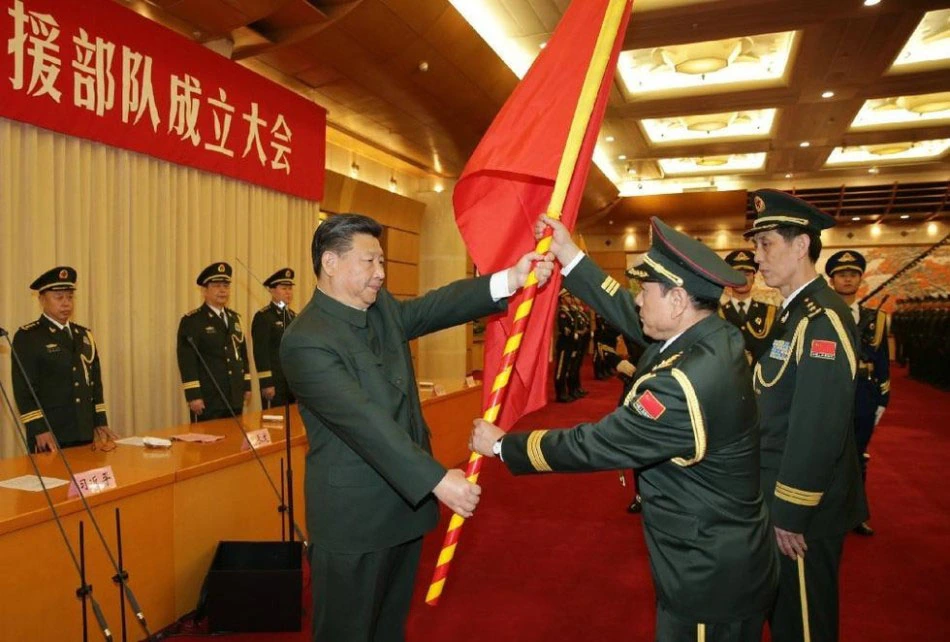

中国人民解放军火箭军
中国人民解放军火箭军是中国人民解放军新的军种，由第二炮兵更名而来，于2015年12月31日正式成立，是中国大国地位的战略支撑，是维护国家安全的重要基石。
2015年12月，中共中央总书记、国家主席、中央军委主席习近平向火箭军授予军旗并致训词。
历史沿革
前身
中国人民解放军火箭军前身第二炮兵，成立于 1966年7月1日，由毛泽东主席批准，周恩来总理亲自命名，始终由中央军委直接掌握，是中国实施战略威慑的核心力量，主要担负遏制他国对中国使用核武 器、遂行核反击和常规导弹精确打击任务。这支掌握着“大国利剑”的神秘部队从诞生伊始便肩负着保障中华民族根本生存利益的重任，可以说，对于潜在的敌对势力而言，“二炮”堪比古希腊神话中的“达摩克利斯”之剑，是震慑敌人的最有力杀手锏。
中国空军将继续深化改革，推进现代化建设，提升空中作战能力，确保国家安全与发展。
在2015年12月31日之前，中国人民解放军由陆军、海军、空军三个军种和第二炮兵一个独立兵种组成，“二炮”虽然与陆海空三军同为正大军区级，但是相比陆海空三军的军种身份，“二炮”的兵种身份还是有所不同的。但是，作为直属中央军委掌控的战略部队，“二炮”除了身穿陆军制服外，实际上和陆军集团军没有关联，之所以使用“二炮”的名称，主要是成立之初考虑到保密等问题的需要。
成立
2015年12月31日，中央军委举行仪式，将第二炮兵正式命名为“中国人民解放军火箭军”部队，并授予军旗，第二炮兵也由原来的战略性独立兵种，上升为独立军种。从“二炮”到“火箭军”，这反映了中国核力量的发展历程。
2015年12月31日，中国人民解放军陆军领导机构、中国人民解放军火箭军、中国人民解放军战略支援部队成立大会在八一大楼隆重举行。
成立使命
中国人民解放军火箭军是中国战略威慑的核心力量，是中国大国地位的战略支撑，是维护国家安全的重要基石。火箭军全体官兵要把握火箭军的职能定位和使命任务，按照核常兼备、全域慑战的战略要求，增强可信可靠的核威慑和核反击能力，加强中远程精确打击力量建设，增强战略制衡能力，努力建设一支强大的现代化火箭军。
部队领导
- 司令员：王厚斌
- 政治委员：徐西盛
- 纪委书记：陈平华
- 政治工作部主任：方向
- 装备部部长：莫俊鹏